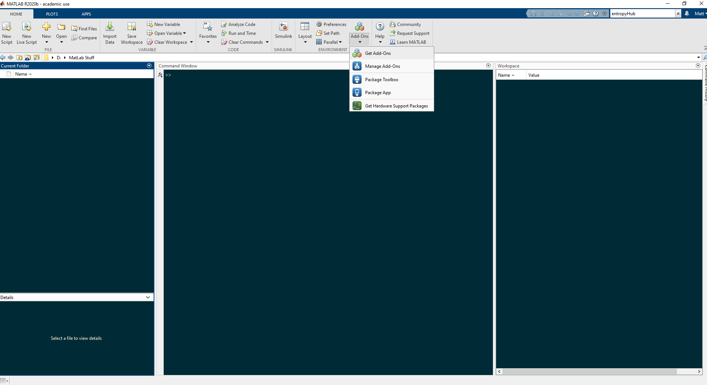
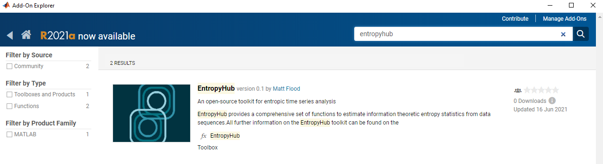
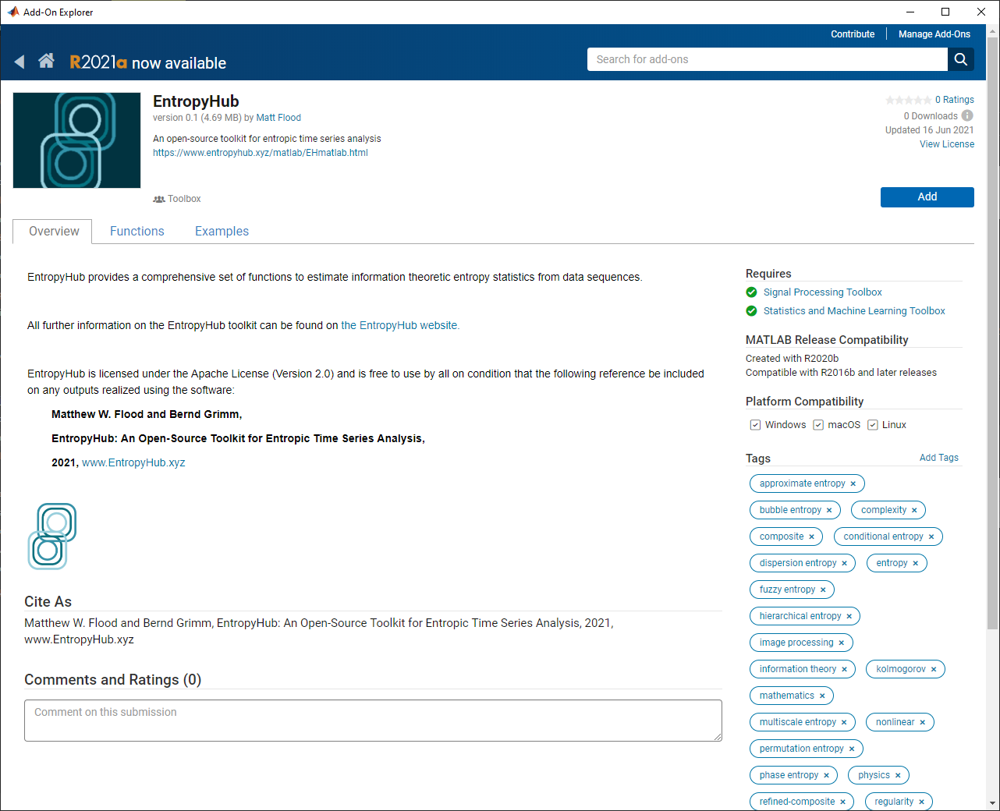
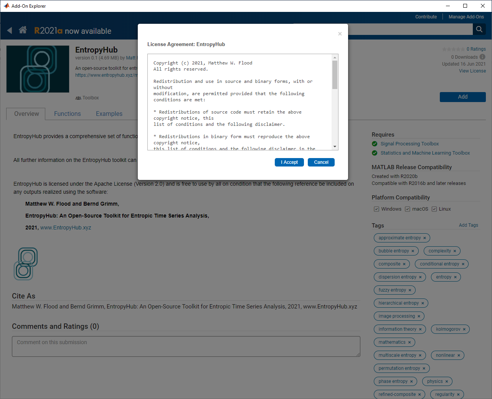
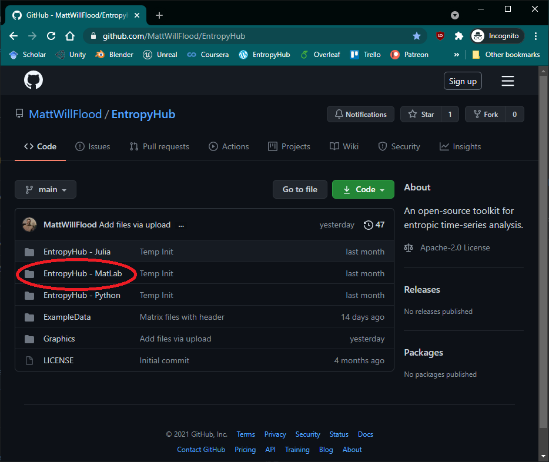
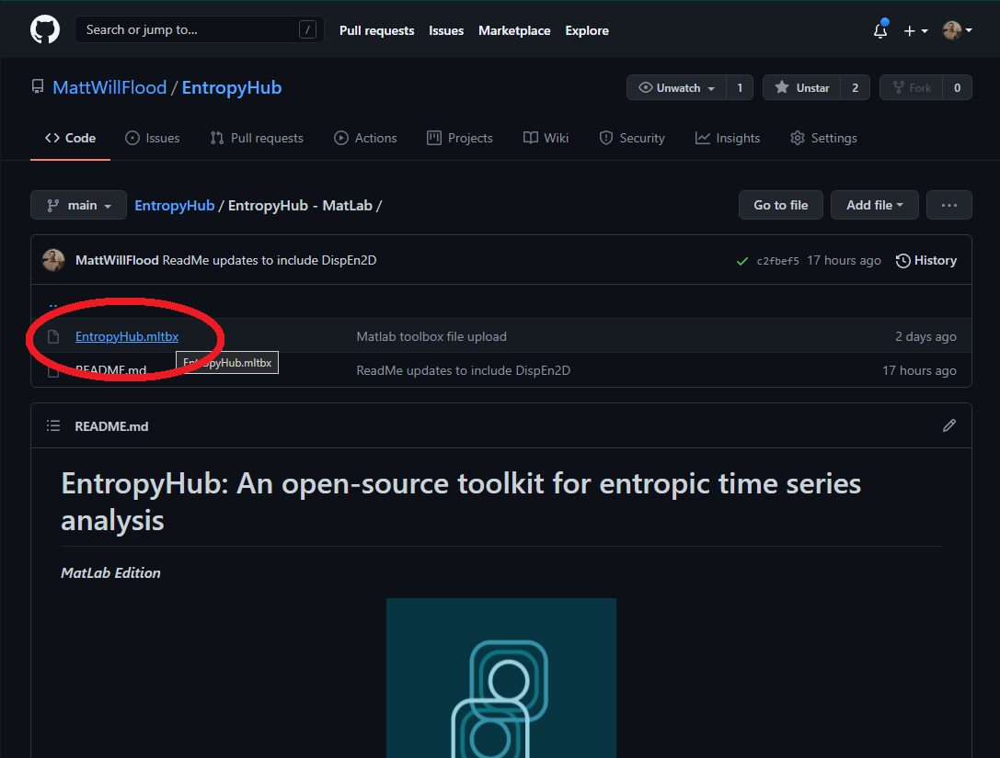
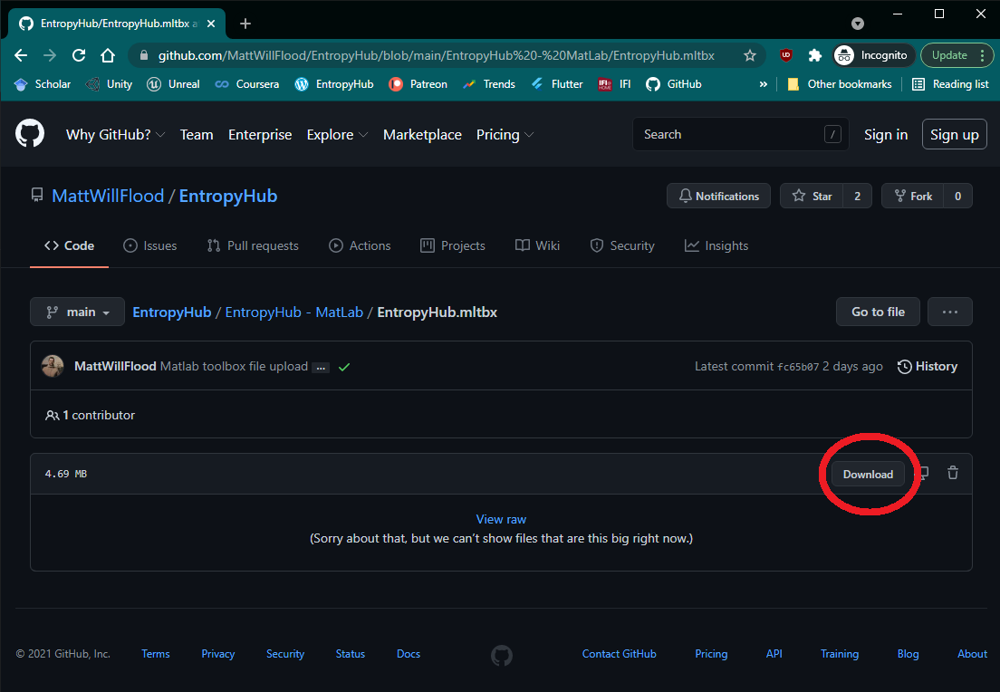
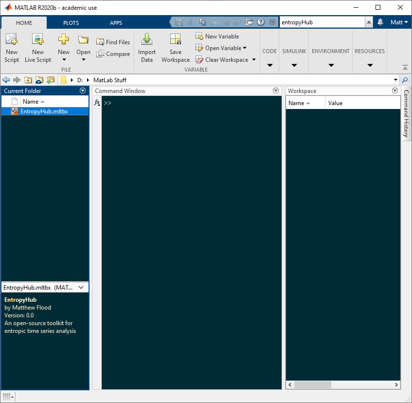
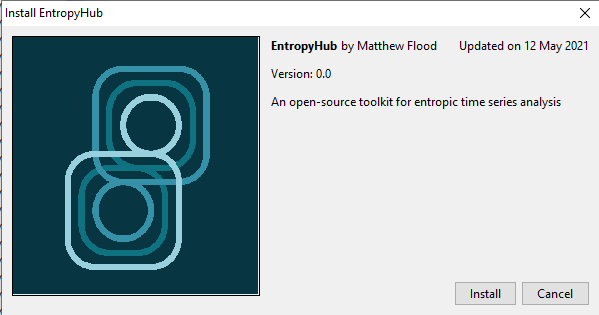

EntropyHub: MatLab
Links to installation files: GitHub || MatLab File Exchange
Requirements & Installation:
There are two additional MatLab toolboxes required to get the full functionality of the EntropyHub toolkit:
Signal Processing Toolbox
Statistics and Machine Learning Toolbox.
However, most functions will work without these toolboxes.
EntropyHub is intended for use with MatLab versions >= 2016a. In some cases the toolkit may work on versions 2015a & 2015b. However, it is not recommended to install on MatLab versions older than 2016 and should only be done so with caution.
There are 2 ways to install EntropyHub for MatLab.
Method 1:
In MatLab, open the Add-Ons browser under the home tab by clicking ‘Get Add-Ons’.
In the search bar, search for ‘EntropyHub’.
Open the resulting link, and click ‘add’ in the top-right corner.
Follow the instructions to install the toolbox. Note: You must be logged in to your MathWorks account.

{kind=link}
{kind=link}
{kind=link}
{kind=link}
{kind=link}
Method 2:
Go to the MatLab folder in the EntropyHub repository on GitHub.
Open the link to the MatLab toolbox file (EntropyHub.mltbx) file.
Download the toolbox file.
Open matlab and change the current folder to the directory where the .mltbx file is saved.
Double-click the .mltbx file to open it and click install.

{kind=link}
{kind=link}
{kind=link}
{kind=link}
To check that EntropyHub has been correctly installed, enter EntropyHub at the command line and the EntropyHUb logo should be displayed.
>> EntropyHub
___ _ _ _____ _____ ____ ____ _ _
| _|| \ | ||_ _|| \| || || \ / | ___________
| \_ | \| | | | | __/| || __| \ \_/ / / _______ \
| _|| \ \ | | | | \ | || | \ / | / ___ \ |
| \_ | |\ | | | | |\ \ | || | | | | | / \ | |
|___||_| \_| |_| |_| \_||____||_| |_| _|_|__\___/ | |
_ _ _ _ ____ / |__\______\/ |
| | | || | | || \ An open-source | /\______\__|_/
| |_| || | | || | toolkit for | | / \ | |
| _ || | | || \ entropic time- | | \___/ | |
| | | || |_| || \ series analysis | \_______/ |
|_| |_|\_____/|_____/ \___________/
Documentation & Help:
A key advantage of EntropyHub is the comprehensive documentation available to help users to make the most of the toolkit. In the supplemental software section of the MatLab help browser, you can find custom EntropyHub documentation on each EntropyHub function, complete with several examples and references to relevant scientific sources. To learn more about a specific function, one can do so easily from the command line by typing: doc FunctionName, which will display the documentation in the help browser. For example:
doc SampEn Documentation on sample entropy function
doc XSpecEn Documentation on cross-spectral entropy function
doc hXMSEn Documentation on hierarchical multiscale cross-entropy function
Alternatively, one can simply access the docstrings of a function (like any MatLab function) by typing help FunctionName in the command line,
which will display the docstrings in the command window - e.g. help SampEn
All information on the EntropyHub package is also detailed in the EntropyHub Guide,
a .pdf document available to download here.
The MatLab API subsections outline the syntax for each base, cross-, multiscale, multiscale-cross, and bidimensional entropy MatLab function.